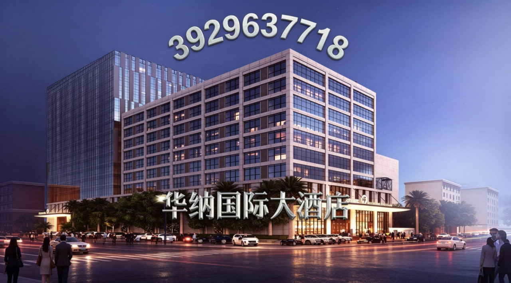
关于 华纳国际大酒店 华纳国际大酒店是一家集住宿、餐饮、商务、会议、旅游等服务为一体的标准星级大酒店。 酒店拥有装修豪华、高雅、环境舒适的各类客房，房间装饰明亮宽敞，设施设备齐全，均配备免费上网端口，以满足各类宾客的服务需求。 酒店拥有大型多功能会议厅，为各级商贸洽谈、研讨会、学术论坛会等会议提供环境极佳的场所，会议的配套服务齐全。 酒店还配备商务中心、空中酒吧、特色餐厅、桑拿按摩休闲中心、美容美发厅等娱乐设施和专用停车场， 并为旅客代办旅游服务，形成了完善的“食、住、行、游、购、娱”配套服务功能系统。 华纳国际大酒店-特色菜肴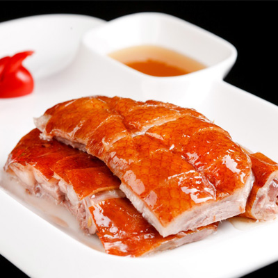
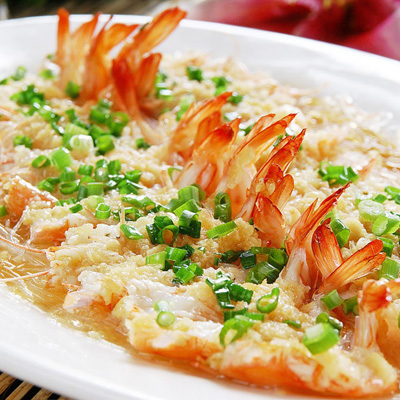
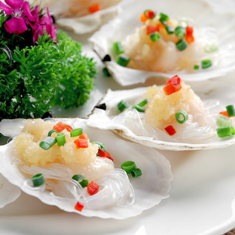
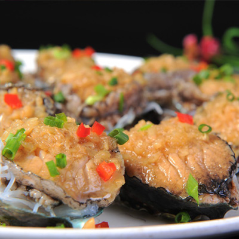
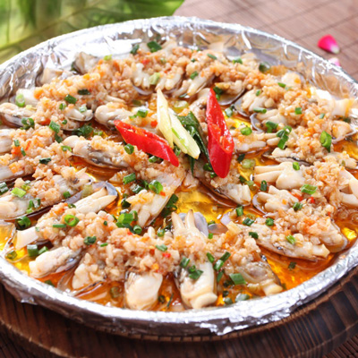
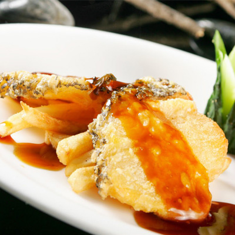
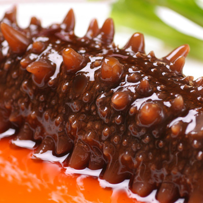
华纳国际大酒店-特色客房与休闲娱乐中心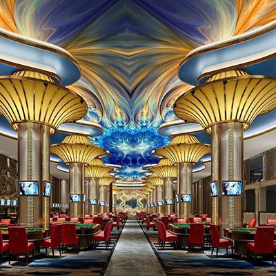
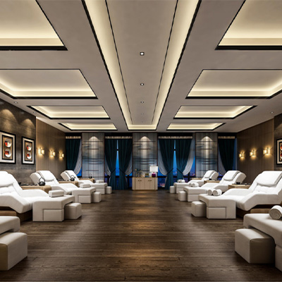
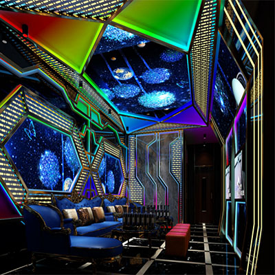
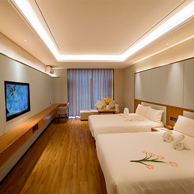
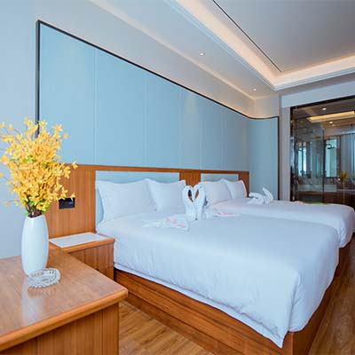